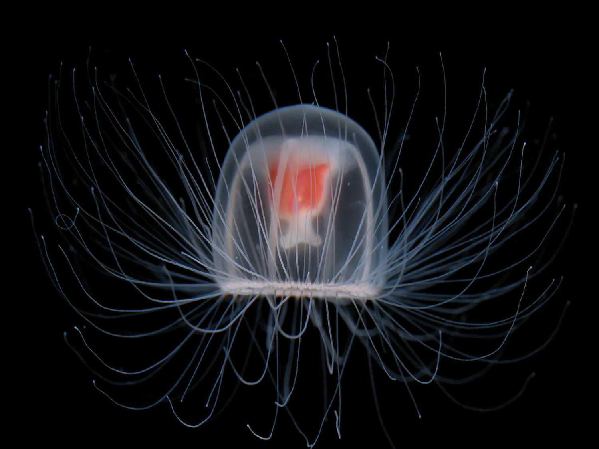
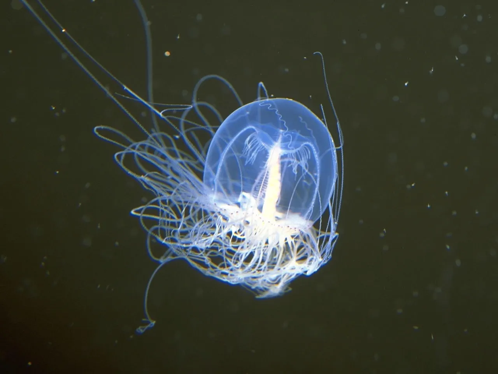
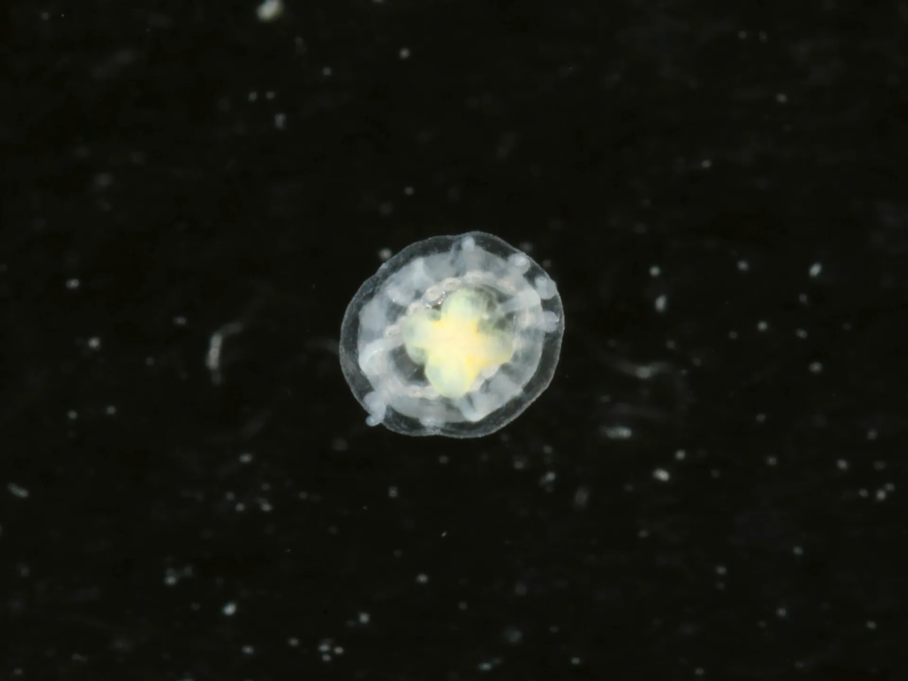

Hello!
Welcome to the Sea Jelly Centre, a place dedicated to Jellyfish facts and images.

Jelly of the Week
Immortal Jellyfish (Turritopsis Dohrnii)
A unique species of jellyfish that is capable of reverting itself back to its polyp stage, technically allowing it to live forever. Unfortunately, most meet an end eventually from disease or other sea creatures.

